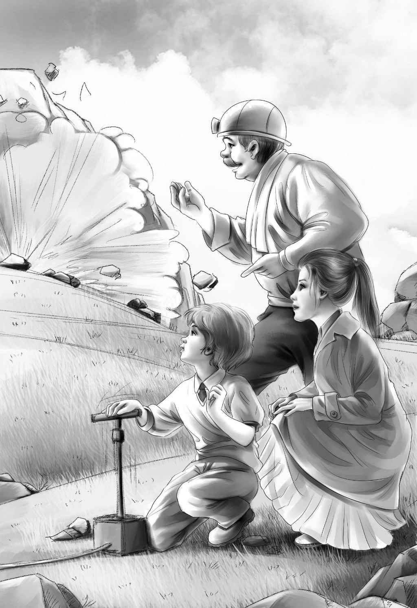

Four lively children lived with their grandfather Alden in a big house. The children’s father and mother had died years before. Their cousin Joe lived in the big house too. He was grown up and his cousins thought he was great fun.
First there was Henry Alden，who was sixteen and in high school. Jessie Alden came next. She was in high school too. Violet was a pretty dark-haired little girl of twelve， and Benny was seven.
Benny was on his way home from school one day in Spring. The minute he went into the house， he heard the telephone ringing.Then he heard Mrs. McGregor， the housekeeper， answering it.
“It’s for you， Benny，” she said. She was ex-cited. “It’s your cousin Joe.”
Benny went to the telephone. “Hello， Joe，”he said.
“We’re going to blast， Benny！” Joe called over the telephone. “The men are almost ready to blast the top off the cave. They say that you children can come over to the island， if you stay right with me. You get the others and come along over.”
“OK. Joe！” cried Benny. “We’ll come just as quickly as we can.” He hurried to the hall to tell his brother Henry. For this cave was one the children had found themselves the summer before. They had crawled in to see how far they could go. Without trying， they had found some Indian tools in the sand which Joe said were very wonderful.
Now， their grandfather had sent some men to the island to take the top off the cave， so that it would be easier to dig the things out.
“Was that Joe？ What did he want？” asked Henry. He came out into the hall.
“He said the men are going to blast the cave open！” shouted Benny. “Last summer he told us we couldn’t come that day， and now he says we can.”
Benny ran upstairs two steps at a time， calling，“Jess！ Jess！ Vi！ Vi！”
“Well，what’s the matter now， Benny？” asked Jessie， looking up from her school work.
“The men are going to blast the cave on Sur-prise Island， and we have to hurry and go over.”
“Who said so？” asked Jessie.
“Joe，” answered Benny. “He just telephoned to me.”
“But we can’t go without Grandfather，” said Violet， softly.
“Grandfather is just driving into the yard，” Henry called loudly up the stairs.“Hurry and come down before he puts the car away！”
Mr. Alden could not understand a word at first， because everyone talked at once. But his driver seemed to be turning the car around any-way. Mr. Alden was smiling to himself about something.
“Did Joe call you， too， Grandfather？” cried Henry.
Mr. Alden laughed. “Well-” he said， “we’ll go down to the dock and over to the island in the motorboat.”
“I hope Captain Daniel will have the boat on this side，” said Henry. “Joe seems to be in a hurry， and the men won’t wait for us for very long.”
“Oh， I hope they won’t blast until we get there，” cried Benny.
“I don’t think they will，” said Mr. Alden smiling. “If Joe sent for you， he will wait until you have time to get there.”
“Of course he will， Grandfather，” said Jessie. “There is Captain Daniel on the dock already.”
It was true. Captain Daniel smiled when he saw the four children coming with their grandfather. He liked them all.
“I’m waiting，” he said， “and Joe is waiting on the island and so are the workmen. Joe said they won’t blast until you are all there.”
“Good. I’m glad，” said Benny， getting into the boat and sitting down.
They were soon on their way across the water to the island where they had spent such a happy summer the year before. They were all thinking of that exciting day when they had found the cave.
Benny looked at the captain. “I don’t suppose you remember the Indian things we found in that cave， Captain？” he said.
“Indeed I do，” said the captain with a laugh. “You children didn’t know then that Mr. Joe dug up things for a living. But I did. I knew Mr. Joe when he was a little boy.”
“Remember how excited Joe was？”cried Jessie. “He wouldn’t even let us dig any more inside the cave.”
“That was all right though， Jessie，” said Henry. “He wanted things done right. These workmen know how to dig better than we do.”
“And here we are， going to blast the top off the cave！” said Benny.
“There’s Joe now，” said Jessie. “Who in the world is that with him？ It’s a girl！”
“That’s not a girl，” said Benny. “That’s a lady.”
“Well， anyway， she isn’t very old，” said Jessie.
“She’s awfully pretty，” said Benny， as they came nearer.
“Hello， children，” cried Joe， as the boat stopped at the dock. “This is Alice Wells. She came over to look at the Indian things you found. She knows lots about such things.”
“That must be interesting work，” said Jessie to Alice， shaking hands. She liked Alice at once. She had such a beautiful smile.
“Yes， it is，” said Alice. “I feel as if I knew every one of you. This is Benny， I’m sure. And Violet. And Henry. Joe has told me so much about you all.” She smiled at Mr. Alden as if she already knew him well.
Benny took Alice’s hand. “Let’s go right off and see them blast，” he said.

“This is going to be fun for you， Benny，” said Mr. Alden， smiling at the little boy. “The men are going to let you push the handle to set off the blast.”
“Oh boy，” cried Benny. “Where is the handle？”
Joe led the way without a word. Past the little yellow house， past the barn where they had lived the summer before， past the beach. There beside a crowd of workmen， they saw a handle in the ground.
“Here they are，” said one of the workmen.“ Are you the little boy who is going to set off this blast？ Now， you take hold of that handle and push it down as far as you can.”
Benny did as he was told. From far away down the island came a loud noise like thunder. Then the children saw a great cloud of smoke， and then flying rocks.
“What a noise that was！” cried Benny. They all watched the smoke still coming from the cave.
“Very good，” said Joe. “Let’s go.”
Down the path they went. Soon they came to the cave. The big rocks were broken into small pieces， and the men started to take them away. The whole cave was open. The children watched quietly.
“I suppose nobody can dig in the cave until all those rocks are lifted off，” said Henry at last.
“That’s right，” said Joe. “They will be taking rocks off for days. Really there is nothing more to see now.”
“You mean we’d better go home then？” said Mr. Alden. He winked at Benny.
“Well， I don’t care too much，” said Benny.“ Anyway， we blasted and that’s more than I expected.”
“You will come over many times when we get to digging，” said Alice. “We have already taken away the shell pile and all the things in it.”
“The Museum people were delighted with all the things，” said Joe. “You found some things that they had never seen before.”
“That’s right，” said Alice. “Joe and I are going to try to find out what they all are. I shall be working on them for a year maybe， and maybe longer.”
“That’s good，” said Benny. “You come up to our house and see us.” He was surprised when Joe laughed.
At supper that same night， Benny sat thinking.
“What’s the matter， Ben？” asked Henry kindly. “Aren’t you going to eat your supper？”
“Oh， yes，” said Benny looking up. “I was just thinking.”
“What about？” Violet asked gently.
“Well，” replied Benny slowly， “I was thinking about Alice. I think Joe likes her. I think that’s why he wanted us to go home.”
“Well，” laughed Jessie， “what of it？ Didn’t you like her yourself？”
“Oh， yes，” cried Benny. “I liked her a lot. But that’s different. I think Joe is going to marry her.”
“What！” shouted Henry. “How can you tell？ Joe just met her today.”
“Oh， no， he didn’t， my boy，” said Mr. Alden.“ Joe and Alice went to school together when they were children. Alice has been away a long time. She just came back to do this work for Joe.”
“Well， I wish Joe would get married，” said Jessie. “It must be lonesome for him living all alone on the top floor of this house with a lot of children like us.”
“And an old man like me！” said her grandfather. “But I’ll tell you something. I watched Joe and Alice today and I think Benny is right. But don’t say a word. Let’s wait and see what happens.”
“Yes， let’s，” said Benny. “But you’ll see they will get married all right.” Then he started to eat his supper.